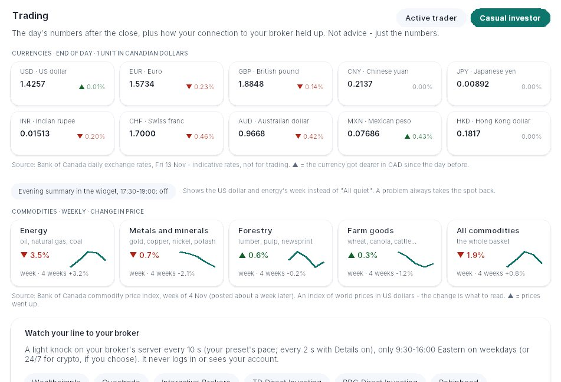

Is it your connection or the broker?
Every second counts when you trade. AdeeboMeter watches the line from your PC to your broker while the market is open, and tells you to wait when it's slow - before you click Buy, not after.

Your broker, watched live
Wealthsimple, Questrade, Interactive Brokers, TD, RBC, Robinhood, Coinbase and more - or any address you type. 9:30-16:00 Eastern on trading days, holidays skipped; around the clock for crypto if you choose.
Wait or go
Delay, jitter and drops to your broker, and whose fault a slow moment was: your PC, Wi-Fi, home network, provider - or the broker itself.
The day's numbers
Ten currencies in Canadian dollars after the close, and the week in energy, metals, forestry and farm prices - from the Bank of Canada, free and official.
An evening summary, if you want it
Weekdays 17:30-19:00 the corner widget can show the close, then goes back by itself. Off unless you turn it on.
Never your account
It never logs in, never sees your account and never suggests a trade. It only times a connection to your broker's public address.
Learn the basics
Lessons and games for beginner investors: what moves a price, how to read numbers, how to spot a scam. Education only.
Not financial advice. Exchange rates are indicative (Bank of Canada) and not for trading. The commodity numbers are an index of world prices - read the change, not the number.
Also: AdeeboMeter for streaming · AdeeboMeter for gaming · Privacy
AdeeboMeter for Windows · no account, no cloud, no telemetry · runs without admin rights